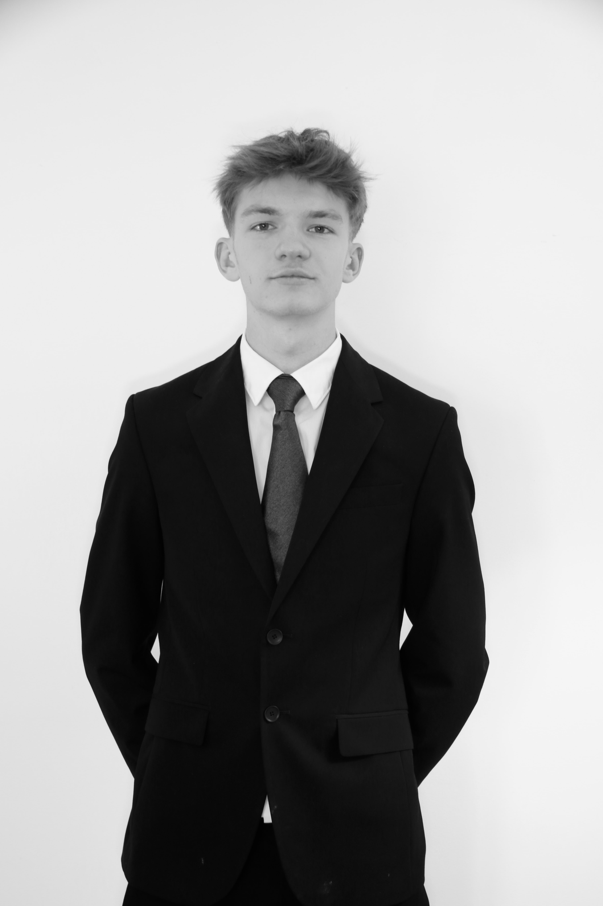
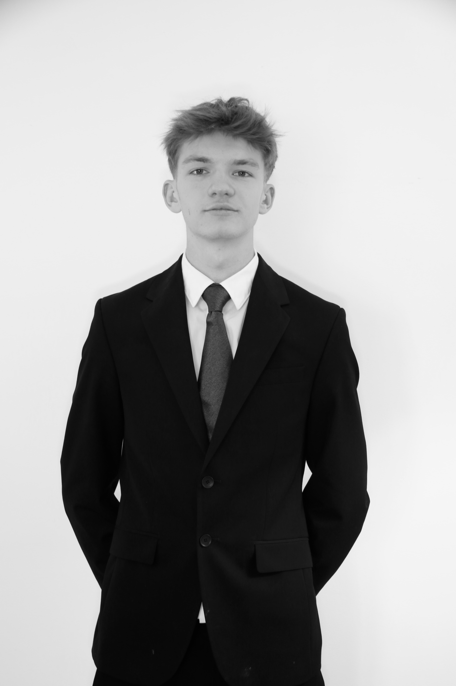

Salut, je suis Nicolas Micuda Becker, étudiant en informatique à l'université Paris 8.
Mon parcours académique m'a permis d'explorer une gamme diversifiée de matières. J'ai déjà expérimenté différents langages, tels que HTML, CSS, Python, Bash, Racket, et bien d'autres encore, enrichissant ainsi ma palette de compétences en programmation.
Mon objectif est de fusionner créativité et technologie pour concevoir des solutions innovantes aux contraintes de demain. J'aspire à contribuer à des projets qui facilite la vie de tout les jours tout en étant éco-responsable. J'aimerai, à la fin de mon master, me lancer en freelance en tant que developpeur(je ne sais pas encore la spécialisation).
Explorez mon site pour découvrir mon parcours, mes compétences, et mes projets. Si vous partagez une passion commune ou si vous avez des idées de collaboration, n'hésitez pas à me contacter.
 
